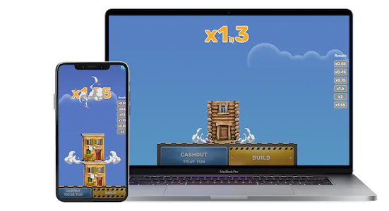

Sicurezza
Tower Rush è una truffa? Cloni, predictor e cosa verificare sull'operatore
Il gioco di Galaxsys non è una truffa: è un gioco d'azzardo con margine dichiarato. Il rischio vero sono i siti clone, gli APK non ufficiali e i «predictor» a pagamento. Cinque controlli prima di depositare.